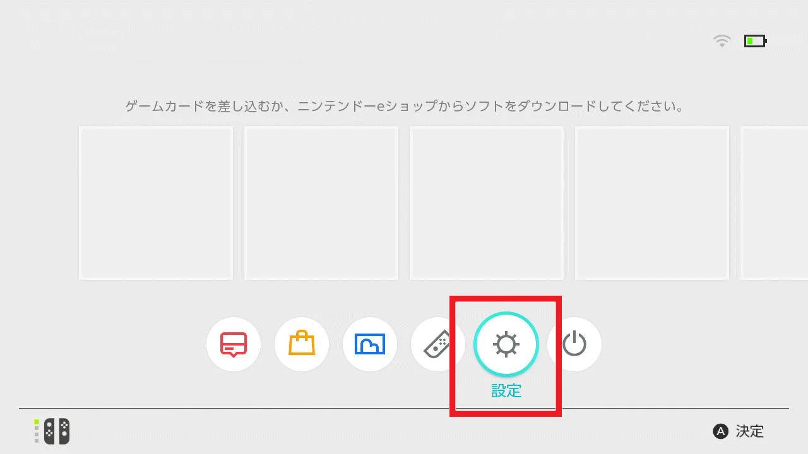
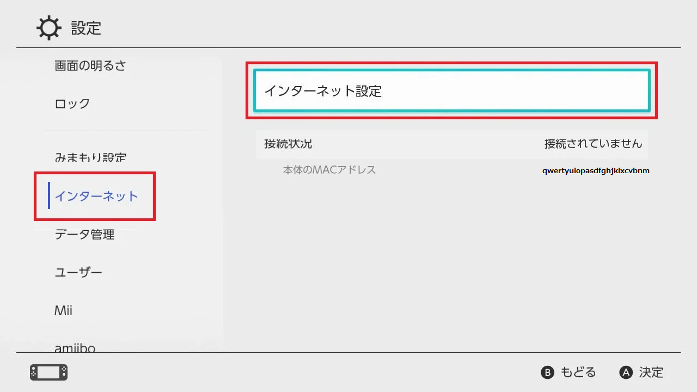

このサーバーは青鬼ごっこをするサーバーです。
人が多ければ多いほど楽しいので、ぜひ遊びに来てください！
サーバーアドレス 60.150.64.229
ポート 19132
HOMEボタンを押してHOMEメニューから「設定」を選択する。
左側のインターネットから「インターネット設定」を選択する。
Wi-Fiで接続中のSSIDを選択して、「設定の変更」を選択する。
上記の情報を入力終えたら、「保存する」を選択して終了する。
あとは、以下のサーバーにログインの手順に沿ってログインする。